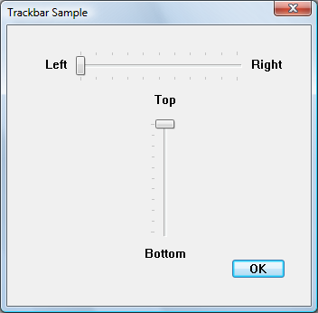

By setting other controls as buddy windows for a trackbar, you can automatically position those controls at the ends of the trackbar as labels.
The following illustration shows a horizontal and a vertical trackbar, both with static controls as buddy windows.

The following code example creates the buddy windows shown in the illustration.
void LabelTrackbarsWithBuddies(HWND hDlg)
{
HWND hwndTrackbar;
HWND hwndBuddy;
const int staticWidth = 50;
const int staticHeight = 20;
//======================================================
// For horizontal Trackbar.
hwndTrackbar = GetDlgItem(hDlg, IDC_SLIDER1);
hwndBuddy = CreateWindowEx(0, L"STATIC", L"Left", SS_RIGHT | WS_CHILD | WS_VISIBLE,
0, 0, staticWidth, staticHeight, hDlg, NULL, g_hInst, NULL);
SendMessage(hwndTrackbar, TBM_SETBUDDY, (WPARAM)TRUE, (LPARAM)hwndBuddy);
//-------------------------------------------------
hwndBuddy = CreateWindowEx(0, L"STATIC", L"Right", SS_LEFT | WS_CHILD | WS_VISIBLE,
0, 0, staticWidth, staticHeight, hDlg, NULL, g_hInst, NULL);
SendMessage(hwndTrackbar, TBM_SETBUDDY, (WPARAM)FALSE, (LPARAM)hwndBuddy);
//======================================================
// For vertical Trackbar.
hwndTrackbar = GetDlgItem(hDlg, IDC_SLIDER2);
hwndBuddy = CreateWindowEx(0, L"STATIC", L"Top", SS_CENTER | WS_CHILD | WS_VISIBLE,
0, 0, staticWidth, staticHeight, hDlg, NULL, g_hInst, NULL);
SendMessage(hwndTrackbar, TBM_SETBUDDY, (WPARAM)TRUE, (LPARAM)hwndBuddy);
//-------------------------------------------------
hwndBuddy = CreateWindowEx(0, L"STATIC", L"Bottom", SS_CENTER | WS_CHILD | WS_VISIBLE,
0, 0, staticWidth, staticHeight, hDlg, NULL, g_hInst, NULL);
SendMessage(hwndTrackbar, TBM_SETBUDDY, (WPARAM)FALSE, (LPARAM)hwndBuddy);
}
IDC_SLIDER1 and IDC_SLIDER2 are trackbars created in the resource editor.
Â
Â